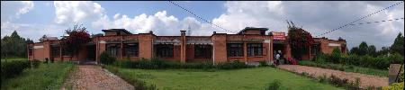

On April 25th,
an 8.1 magnitude earthquake hit Nepal in the area halfway between capital city Kathmandu and tourist town
Pokhara. Tremors were felt across the region, with further loss of life in India, Bangladesh, Tibet, China and
on Mount Everest. More than 2400 people had died in the quake, and that more than 1,700 had been injured. At
least 539 people were killed in the Kathmandu valley. Major historic monuments in the Nepalese capital have been
destroyed in the powerful earthquake. About 400 foreign climbers around Mt Everest were caught by the tremors
and a huge avalanche that buried part of the camp. At least 18 people were killed and 60 more injured; others
are still missing.
But fortunately, the staff and buildings of the CAS’s Kathmandu Science & Education Center, which located in
Kirtipur, Kathmandu, have withstood in the strong tremors. The center’s director, Prof. YAO Tandong, has
contacted with the staff immediately after the catastrophic earthquake, and arranged emergency response measures
and set up daily contact mechanism between Nepal Center and Beijing.
CAS president, Prof. BAI Chunli, has expressed his concern about the safety of the Center’s staff and
facilities. He was delighted with the situation of the Center and appreciated the following emergency measures
taken. Prof. BAI also urged the Center’s staff to pay attention to safety as aftershocks continue.
